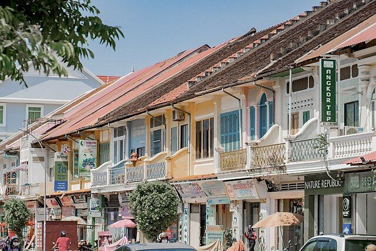
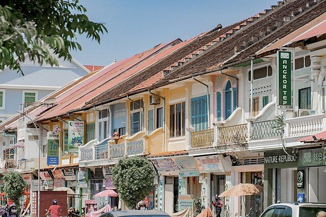

ខេត្តបាត់ដំបង ស្ថិតនៅភាគខាងលិចនៃប្រទេសកម្ពុជា និងជាក្រុងធំជាតំបន់ភាគលិច។ ខេត្តនេះល្បីដោយស្រែបញ្ញូរ, ទេសភាពស្រែស្រាល, និងវប្បធម៌ខ្មែរបែបប្រពៃណី។ ក្រុងបាត់ដំបងមានទីកន្លែងទេសចរច្រើន ដូចជា ភ្នំបាណន់, ភ្នំសំពៅ, រថភ្លើងខ្នងឫស (Bamboo Train) និងផ្សារទំនើបៗ។ ខេត្តនេះក៏មានប្រវត្តិសាស្ត្រយូរឆ្នាំ និងសិល្បៈបុរាណ ដែលទាក់ទាញភ្ញៀវទេសចរពីក្នុង និងក្រៅប្រទេស។
ខេត្តនេះល្បីដោយ ស្រែស្រាលទន្លេស្វាយ និងអរិយធម៌ប្រពៃណីខ្មែរ។ ក្រុងបាត់ដំបងផ្តល់ឱកាសទេសចរទស្សនា ទាំងសួនច្បារផ្សេងៗ, ប្រាសាទបុរាណ